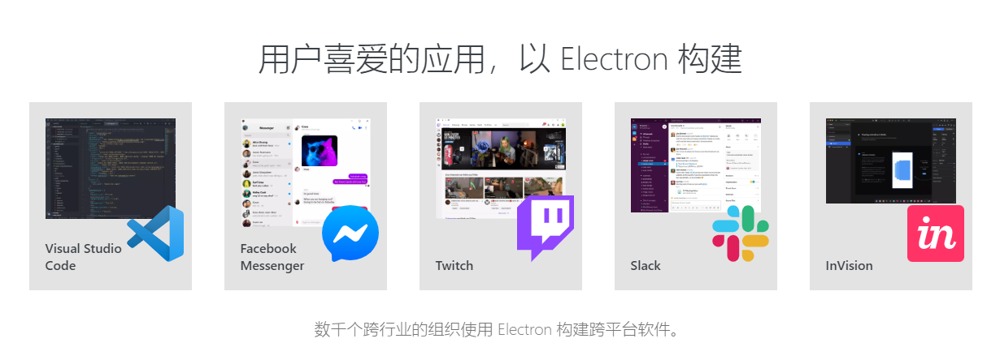
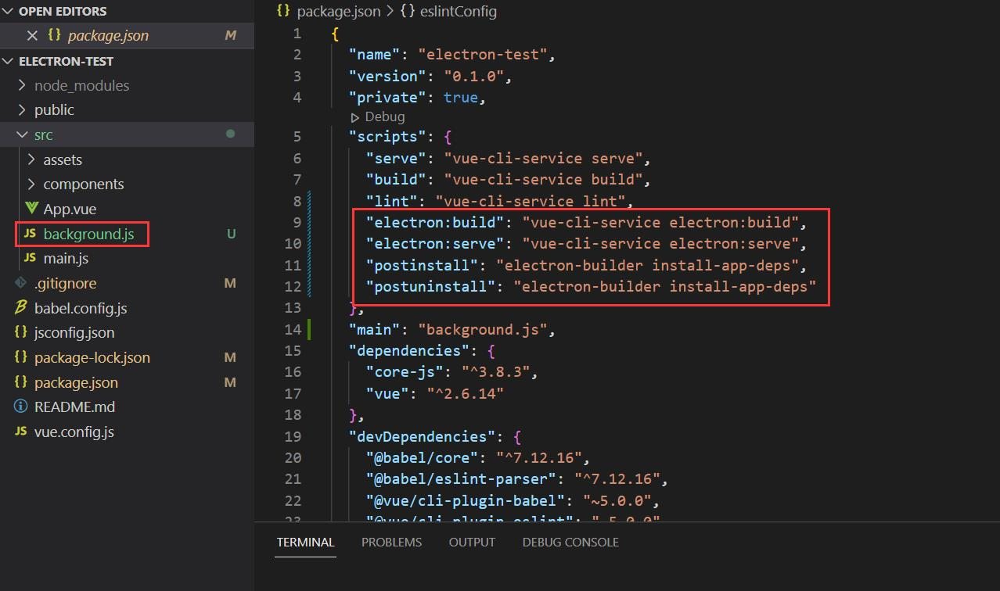

# 一、electron 介绍
官网 (https://www.electronjs.org/)
使用 JavaScript，HTML 和 CSS 构建跨平台的桌面应用程序，通过将 Chromium 和 Node.js 合并到同一个运行环境中，兼容 Mac、Windows 和 Linux，可以构建出三个平台的应用程序。

# 二、优势
- 大大降低了开发桌面应用的门槛
- 跨平台 可以打包成 Mac、Windows 和 Linux 三个平台的应用程序
- Chromium 作为内核，无需考虑兼容性，一套代码兼容多个平台
# 三、需要用到的前端技术
- Html、CSS、JavaScript、ES6
- 前端开发工具 Vue、Angular、React 等的一种
- 进阶使用可能还需要 node.js
# 四、项目搭建
1. 使用 vue-cli 创建 vue 项目
vue create electron-test
2. 安装插件 vue-cli-plugin-electron-builder
vue add electron-builder
安装完项目结构新增了以下内容：

其中 background.js 为 electron 主进程相关操作
五、自定义打包命令
package.json 新增以下打包命令，文档参考：https://www.electron.build/cli
"electron:build-linux-arm64": "vue-cli-service electron:build --linux --arm64 -p never",
"electron:build-linux-x64": "vue-cli-service electron:build --linux --x64 -p never",
"electron:build-win64": "vue-cli-service electron:build --win --x64 -p never",
"electron:build-win32": "vue-cli-service electron:build --win --ia32 -p never",
注意：linux 安装包需要在 linux 系统上编译，另外 linux arm64 系统的安装包在 arm64 上编译会报错，需要在 linux x64 上交叉编译